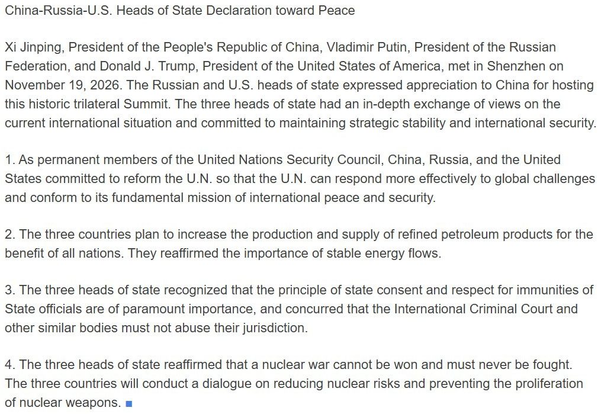
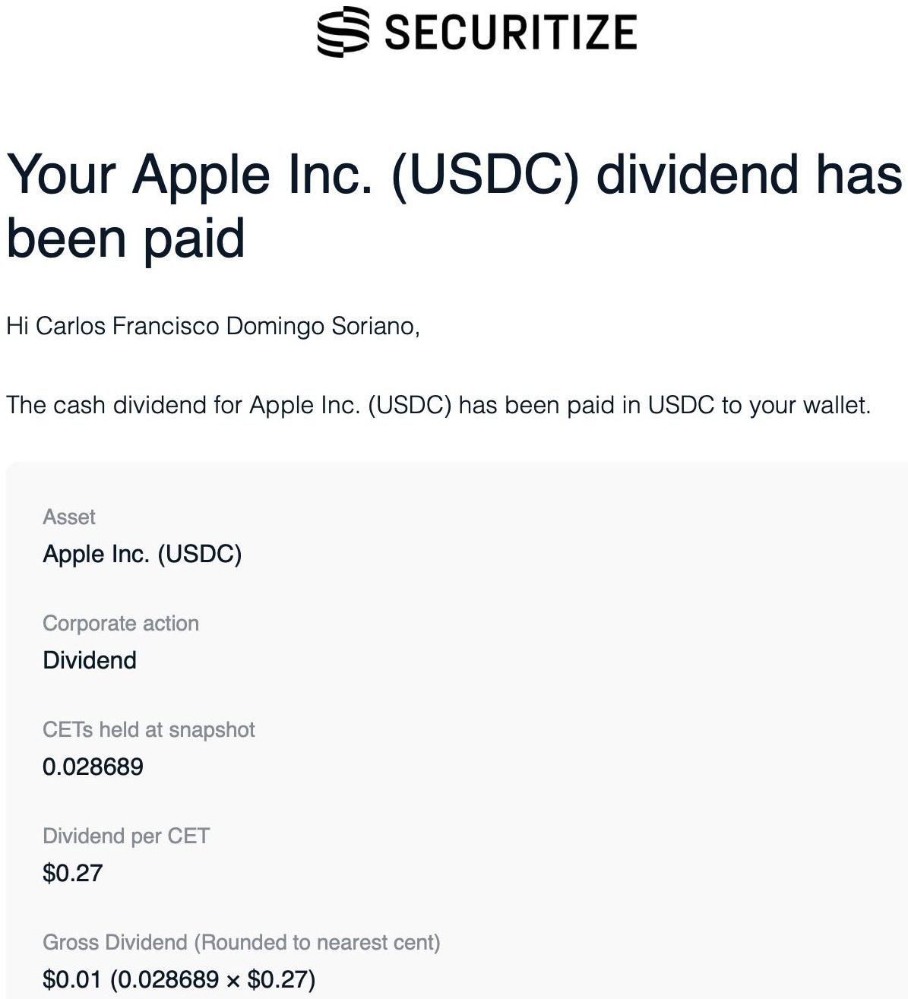
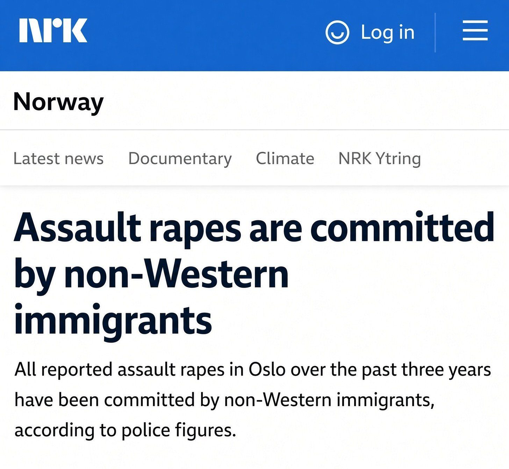

TODAY 🚨: The Commission issued a proposal to address the inefficiencies in the current governance and funding model of the Consolidated Audit Trail (CAT).
This proposal would bring the CAT under the SEC’s direct control, while ensuring its continued operation with minimal disruption.
We have processed our first onchain dividend for a tokenized public stock of Apple sending USDC directly to your wallet.

As technology reshapes capital markets, our regulatory framework must advance with it.
Great to talk with Jamie and discuss the SEC's important work underway to modernize market infrastructure and meet this moment of unprecedented innovation for American investors. 🇺🇸
Opinion: A bank statement can show that money arrived from abroad, but it can't show why no one reported it. https://news.bloombergtax.com/tax-insights-and-commentary/foreign-gift-penalty-relief-needs-more-than-just-bank-records
Oracle has secured all the funding we need to fulfill our contract with OpenAI. With our final capital raise earlier this month, we became the first hyperscaler fully funded for this investment cycle. The financing we outlined at Oracle Investor Day, including vendor financing, is in place. Any further private discussions with vendors are just additional options. Our ability to deliver on our OpenAI contract does not depend on those discussions. Any media reports that will come out and say the contrary are incorrect and wrong.
Oracle and OpenAI are making rapid progress on our infrastructure partnership. Our Abilene campus, where Astra-6 was trained, is nearly complete. Shackelford, our next gigawatt-scale campus, is fully permitted. The handover of NVIDIA Vera Rubin racks in its data halls is on track for the coming weeks.
We continue to expect positive free cash flow in the second half of FY2028. We are targeting more than $30 billion in free cash flow in FY2029 and expect to self-fund future growth beginning that year.
BREAKING: Nvidia, $NVDA, sets a new record for the largest-ever loss of market cap in a stock in 45 days.
The stock has now lost -$2.8 trillion in market cap from its high seen on October 6th.
There have been 33 trading days since October 6th, meaning Nvidia has lost an average of -$85 billion per day, for 33 trading days in a row.
Furthermore, Nvidia has accounted for ~40% of the S&P 500's market cap losses since its record high on October 6th.
That's one way to make history.
I asked Gemini 4 Neon to create 100 HTML files.
The rules were simple: - look stunning - zero repetitive designs - go full creative mode
This model is absolutely AMAZING. I can confidently say it's the closest I've tested to Opus and Fable. Nothing else comes close.
It's also the FIRST Google model I can use without feeling like I'm missing out.
It's great at web design and frontend, understands what you want, and follows instructions like a champ.
HIGHLY RECOMMENDED.
I'll keep testing it for backend.
See the files for yourself: https://t.co/MbFCDhdGgf
See how other models performed here: https://t.co/HVhecHu6oL
There are lots of files I like. Here are some:
Abyssal Hydrothermal Vent https://t.co/RQy3hlu6Ll
Euclidean Polyrhythm Wheel - this is AWESOME! https://t.co/BKwulxg1SL
Abyssal Sonar - playable game, turn the sound on! https://t.co/HxuJKimZyI
Bioluminescent Slime Maze https://t.co/ViZAIOwru5
Noir Rain Window & Shortwave https://t.co/UnB3Cgez9g
Hyperbolic Poincaré Garden https://t.co/o88i44Xo3l
Grand Brass Mechanical Orrery https://t.co/oHpmEmTojT
Optical Bench - this is cool! https://t.co/G6rXonbJP6
Fourier Epicycle Portrait Machine https://t.co/H0hh4QJgRr
The Fourth Meridian - 1965 Title Sequence https://t.co/4PkUNj9Ioe
Mahogany 17-Key Kalimba https://t.co/TFnTsMDEvA
ASCII Topographic Terrain https://t.co/QLjITDtPiv
Mount Caldera - Volcanic Lava Contour Map https://t.co/27AuMEvsKt
Navier-Stokes Ink Tank https://t.co/wMCamMK61H
Brewster Optical Brass Kaleidoscope
.@POTUS at the trilateral meeting with President Xi and President Putin: "We have a special responsibility to maintain open, respectful, and productive dialogue on issues impacting not just our people, but the entire planet. Too often past leaders avoided talking to nations with whom they had disagreements — and we feel the opposite."
HISTORIC: “For the first time in history, for the US, Russia and China there’s a chemistry, an energy and a friendship between us that the world has never seen before,” Trump said.
He also described the US, Russia and China as the three most powerful nations in the world.
.@POTUS: "We are going to be discussing the war between Russia and Ukraine… President Putin and I have had a long discussion today… and I think things are happening. I think that he — and I hope the other side — would like to see an end to that war."
BREAKING: It's been reveals that for 36 month straight, 100% of sexual assaults reported in Oslo, Norway were committed by non-Western immigrants.

Today, as part of Operation Economic Outcast, Treasury is targeting key “oil trustees” the Iranian regime relies on to facilitate the sale of oil abroad. With no oil on the water outside of the U.S. military blockade and no oil loaded onto vessels since the start of Operation Economic Outcast, the regime is attempting to recoup billions of dollars from its oil trustees. In many cases, these corrupt trustees have kept the oil revenue for personal gain. https://home.treasury.gov/news/press-releases/sb0697/
JUST IN - An Anthropic mathematician claims to have proved the Riemann hypothesis, one of mathematics' most famous unsolved problems, with help from the AI model Claude.
https://www.disclose.tv/id/b89awfhfdn/
U.S. Department of Agriculture targeted by cyberąttack, disrupting systems used to process farmer payments, per Reuters.
BREAKING: Senate passes Trump-backed bill to speed up permits for power plants, power lines, and data centers in a 62-33 vote.